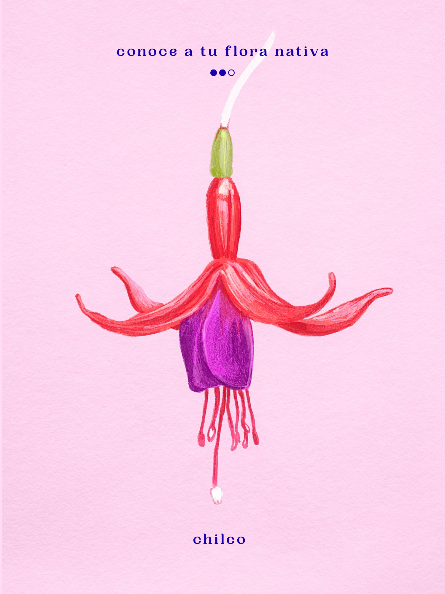
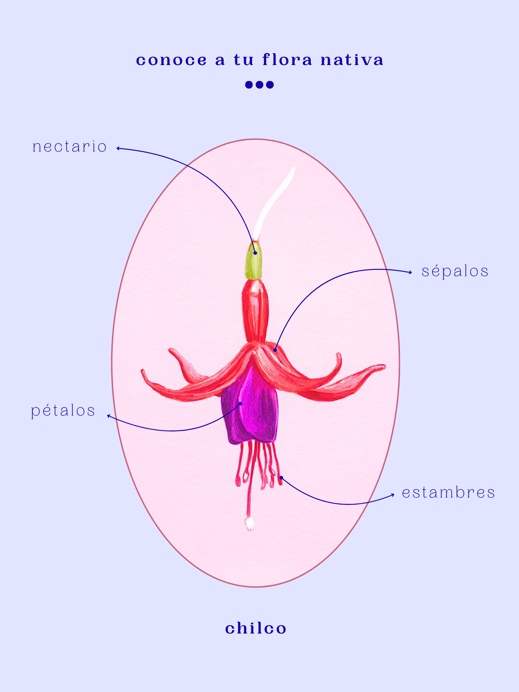

proyecto personal ilustrativo que busca educar a la comunidad chilena sobre nuestras especies nativas y endémicas.
consta de dos formatos:
el afiche y el folreto.
*
los afiches tiene como fin dar a conocer a través de lo visual y lo textual, realizando una ilustración que represente fielmente a la especie acompañada de su nombre común.
mientras que los folletos buscan informar en profundidad los diversos fenómenos que sufren las especies.

